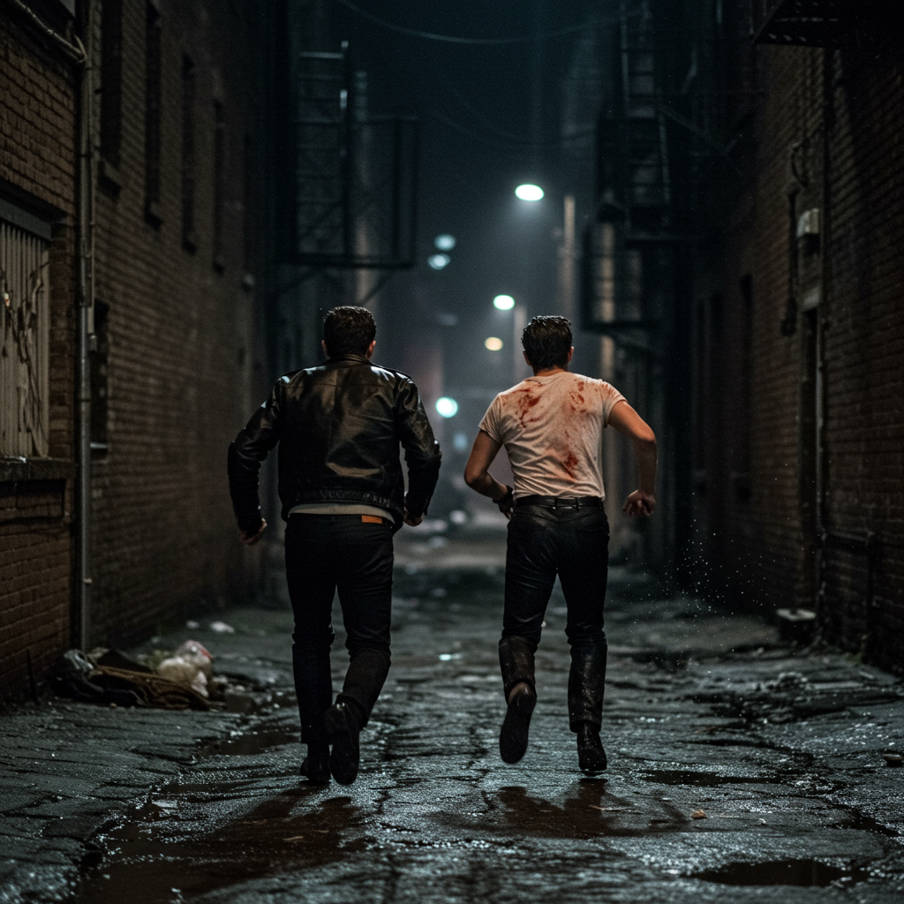

Image Created with ImageFX
Brooklyn, 1964. After a vicious brawl with their neighborhood rivals Tony and Sal, the notorious Aberano Brothers, Billy Branco and Jet Romano race through the streets, knuckles bloodied and shirts torn.
They howl like wolves at the moon as adrenaline pumps through them, searching for somewhere to lay low.